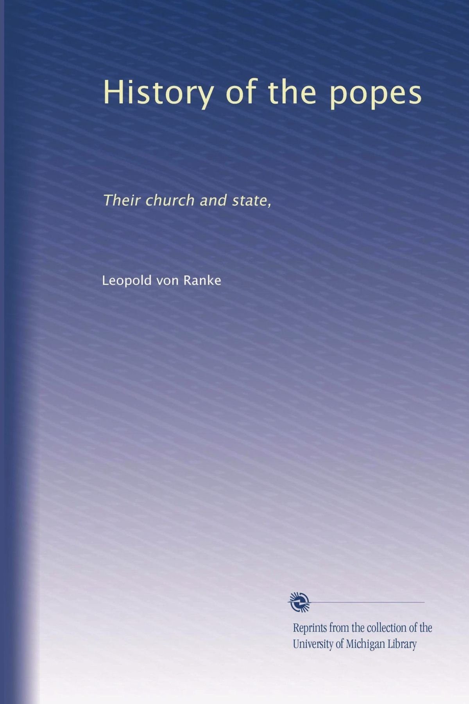
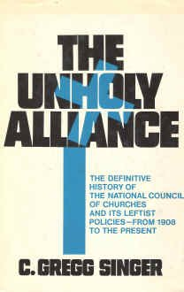

Olavo de Carvalho
Obra-prima da historiografia de todos os tempos.
Ver também
- The history of the Popes; their church and state: Volume I (https://archive.org/details/historyofpopesth00rankuoft)
- The history of the Popes; their church and state: Volume II (https://archive.org/details/historyofpopesth01rankuoft)
- The history of the Popes; their church and state: Volume III (https://archive.org/details/historyofpopesth02rankuoft)
- The history of the Popes during the last four centuries: Volume I (https://archive.org/details/historyofpopesdu01rankuoft)
- The history of the Popes during the last four centuries: Volume II (https://archive.org/details/historyofpopesdu02rankiala)
- The history of the Popes during the last four centuries: Volume III (https://archive.org/details/historyofthepope03rankuoft)
- Guia: Clássicos de História (https://xunilrj.github.io/guides/historia.html)
Mais livros
David G. Dalin
Gordon Thomas
Mark Riebling
